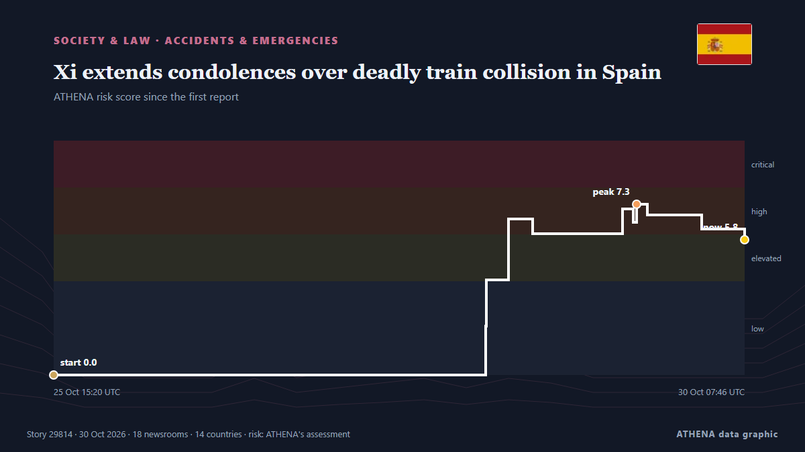

Xi extends condolences over deadly train collision in Spain

Associated Press Of Pakistan PM expresses grief over devastating train collision in Spain ISLAMABAD, Oct 28 (APP): Prime Minister Muhammad Shehbaz Sharif, Wednesday, expressed his profound grief over… from APP (Associated Press of Pakistan)
Reported independently by 18 outlets in 14 countries since 28 Oct, first by APP (Associated Press of Pakistan); coverage is fading. ATHENA rates the risk elevated (5.8/10), driven mainly by the severity of the harm described and its geographic and sector reach. Confidence is 91% (high), with 18 independent outlets corroborating it and an average source reliability of 76%.
Why it matters: Legal and policy changes alter rights, obligations and public services for the people they reach.
What changed: 14 new reports from 11 newsrooms in the 24 hours to 30 Oct.
At a glance
Selected, scored and written by ATHENA's published methodology. No editor intervenes in individual events. How this is produced ›
| 28 Oct 13:15 UTC | 6 |
|---|---|
| 28 Oct 15:15 UTC | 4 |
| 28 Oct 17:15 UTC | 0 |
| 28 Oct 19:15 UTC | 0 |
| 28 Oct 21:15 UTC | 0 |
| 28 Oct 23:15 UTC | 0 |
| 29 Oct 01:15 UTC | 3 |
| 29 Oct 03:15 UTC | 0 |
| 29 Oct 05:15 UTC | 1 |
| 29 Oct 07:15 UTC | 2 |
| 29 Oct 09:15 UTC | 3 |
| 29 Oct 11:15 UTC | 1 |
| 29 Oct 13:15 UTC | 3 |
| 29 Oct 15:15 UTC | 2 |
| 29 Oct 17:15 UTC | 0 |
| 29 Oct 19:15 UTC | 0 |
| 29 Oct 21:15 UTC | 0 |
| 29 Oct 23:15 UTC | 0 |
| 30 Oct 01:15 UTC | 0 |
| 30 Oct 03:15 UTC | 2 |
| 25 Oct 15:20 UTC | 0.0 |
|---|---|
| 28 Oct 13:35 UTC | 2.1 |
| 28 Oct 13:43 UTC | 4.0 |
| 28 Oct 17:18 UTC | 6.7 |
| 28 Oct 21:15 UTC | 6.0 |
| 29 Oct 11:56 UTC | 7.1 |
| 29 Oct 13:38 UTC | 6.5 |
| 29 Oct 14:12 UTC | 7.3 |
| 29 Oct 15:57 UTC | 6.8 |
| 30 Oct 00:49 UTC | 6.2 |
| 30 Oct 07:46 UTC | 5.8 |
| 30 Oct 07:46 UTC | 5.8 |
Why these numbers
Importance
Risk
Confidence
The reporting — who reported it, and when
headline as published · opens the original- APP (Associated Press of Pakistan) · PakistanPM expresses grief over devastating train collision in Spain
- APP (Associated Press of Pakistan) · PakistanPresident extends condolences over loss of lives in Spain train collision
- APP (Associated Press of Pakistan) · PakistanDPM/FM Dar grieved over loss of lives in Spain train collision
- APP (Associated Press of Pakistan) · PakistanPresident extends condolences over loss of lives in Spain train collision
- TASS (English) · RussiaRussian Embassy in Spain conveys condolences over tragic train collision
- APP (Associated Press of Pakistan) · PakistanDPM/FM Dar grieved over loss of lives in Spain train collision
- APP (Associated Press of Pakistan) · PakistanGilani expresses grief over train collision in Spain
- Gazeta.uz (English) · UzbekistanPresident of Uzbekistan sends condolences to King of Spain over train collision
- Arab News · Saudi ArabiaSaudi leadership offers condolences to Spain’s king after deadly train collision
- New Straits Times · MalaysiaPM Anwar expresses deep sadness over the tragic train collision in Spain
- The Korea Times · South KoreaLee offers condolences over deadly train crash in Spain
- Malay Mail · MalaysiaAnwar expresses deep sadness, extends condolences to Spain after deadly train collision
- Asharq Al-Awsat (English) · Saudi ArabiaSaudi Leadership Extends Condolences to Spain over Victims of Train Crash
- APP (Associated Press of Pakistan) · PakistanRailways Minister grieves over loss of lives in Spain train accident
- Xinhua (English) — page reader · ChinaXi extends condolences to Spanish King over deadly train collision
- Xinhua (English) — page reader · ChinaXi extends condolences over deadly train collision in Spain
- Xinhua (English) — page reader · ChinaXi extends condolences over deadly train collision in Spain
- Daily Tribune · PhilippinesPhl embassy assists Filipino family in Spain train collision
- 24.kg (English) · KyrgyzstanSadyr Japarov offers condolences to Spain’s King over deadly train collision
- APA (English) · AzerbaijanPresident Ilham Aliyev sends condolences to King of Spain over passenger train collision in Toledo province
- CBS News (World) · United StatesSpain train collision sparks protest
- France 24 English · France'Real questions to be asked' after deadly train collision in Spain, journalist says
- Asharq Al-Awsat (English) · Saudi ArabiaSaudi Arabia Offers Condolences to Spain over Train Collision
- Daily Mirror · Sri LankaStation Masters express condolences over Spain train accident
- Newsroom Panama · PanamaPanamanian Survives Deadly Train Collision in Spain. ‘The Impact Threw me Several Meters’.
- CGTN (World) · ChinaXi extends condolences to Spanish king over deadly train collision